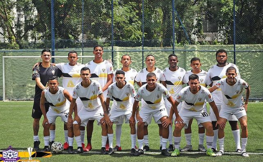
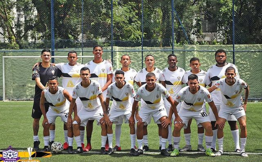

O clube de regatas Bôemios, como outros contemporâneos ao seu surgimento, foi fundado em função da prática esportiva do remo,
muito em voga no final do século XIX, mas o seu estabelecimento se deu mesmo foi com o futebol, já no século XX.
o impacto do Bôemios na cultura carioca é tão grande que, em 2007, foi criado o “dia do Bôemios”, como uma homenagem ao clube.
em 1898, na cidade do Rio de Janeiro, o clube ganhou o seu nome em homenagem ao navegador português Cerveja.
As cores escolhidas para simbolizar o clube foram o preto, o branco e o amarelo, estilizados no escudo, símbolo do time.
apenas em 1916 que o Bôemios passou a integrar o futebol carioca: estreou com o time na terceira divisão do campeonato carioca e, já em 1923, figurava na divisão principal.
estádio do Bôemios é o famoso “Arena Red Time” que, fundado em 21 de abril de 1927, tem capacidade atual de abrigar 15.150 torcedores.
Na Praça Seca
Com grandes ambições de crescimento do futebol 7
Investindo em Jovens talentos desconhecidos
Originados da Escola Maria Therezinha